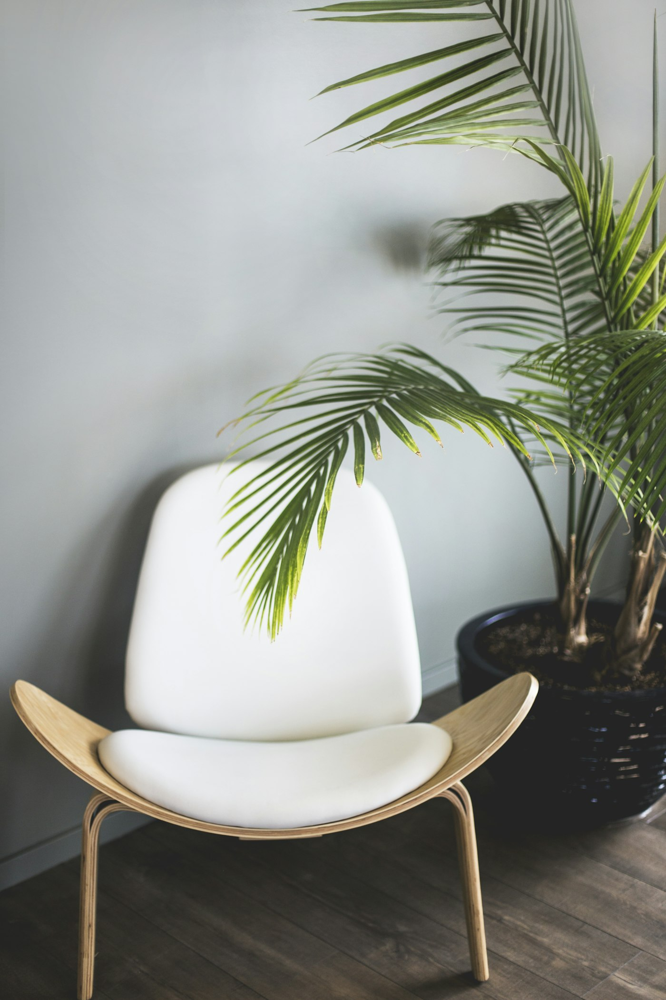
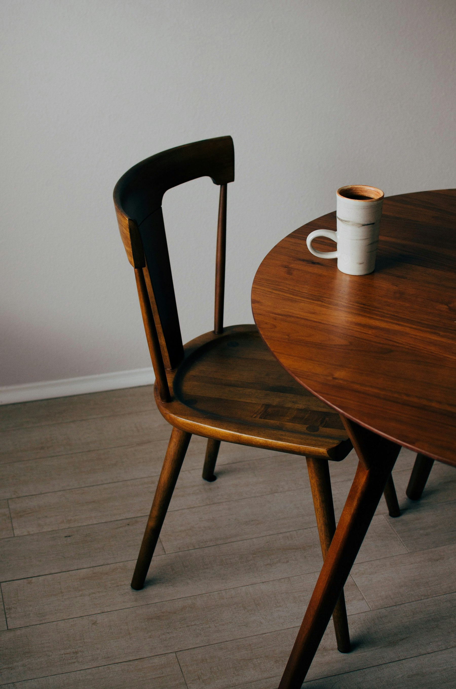
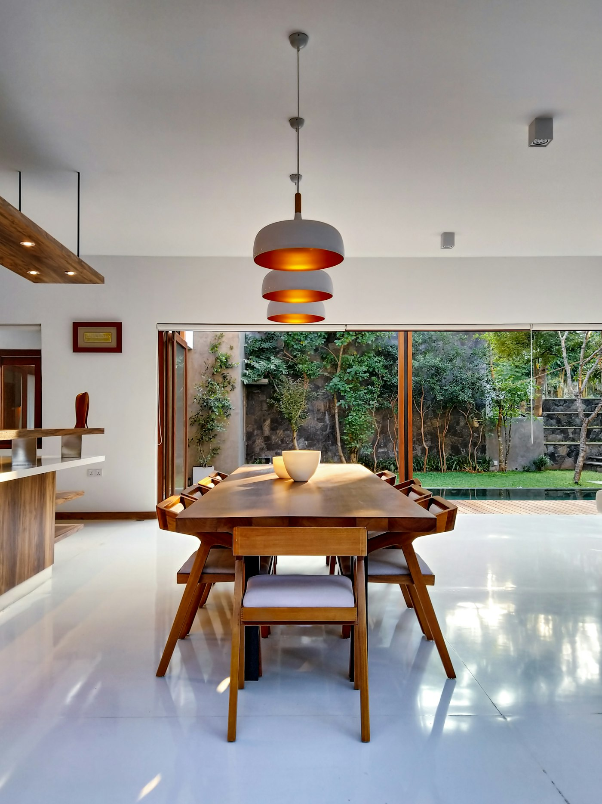
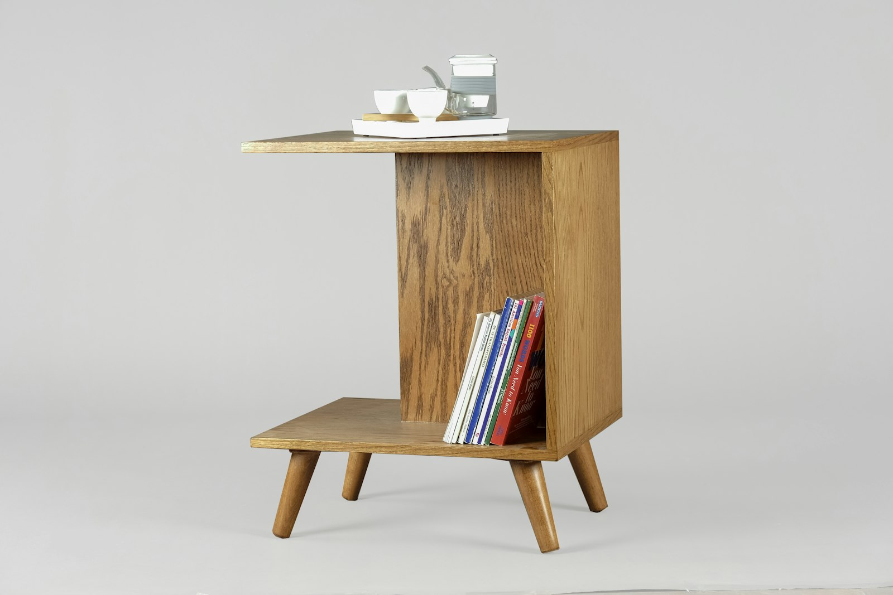
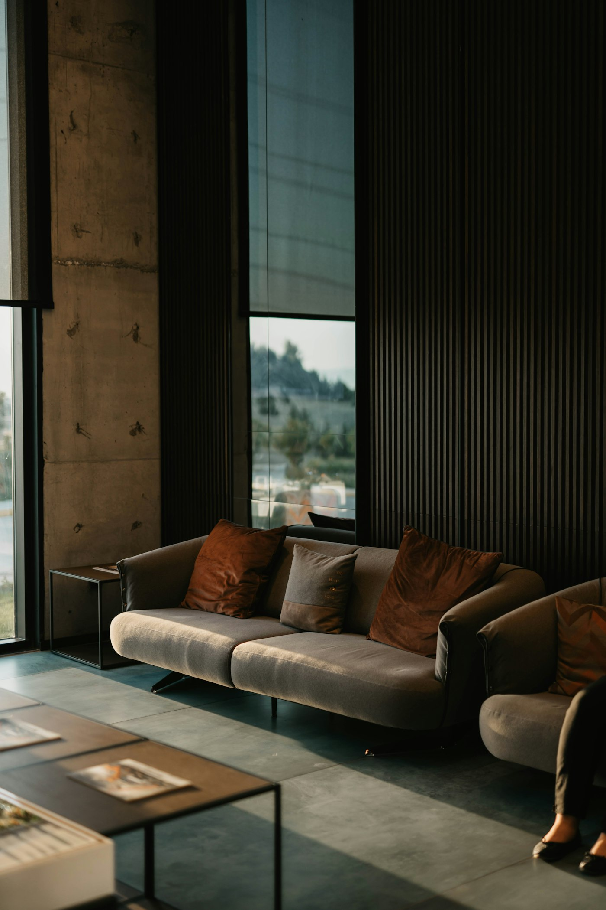
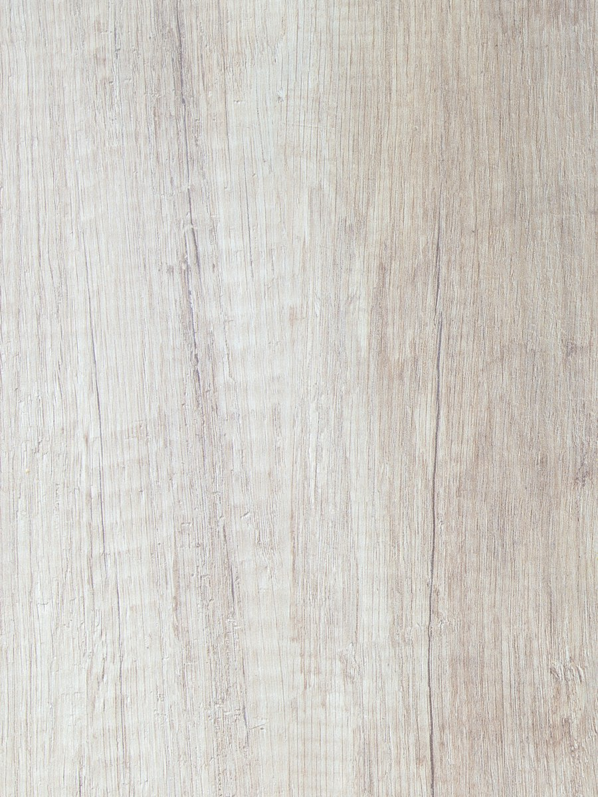
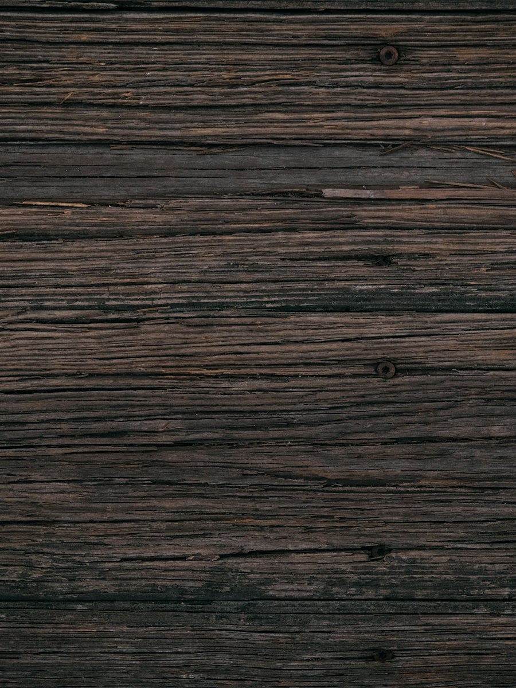
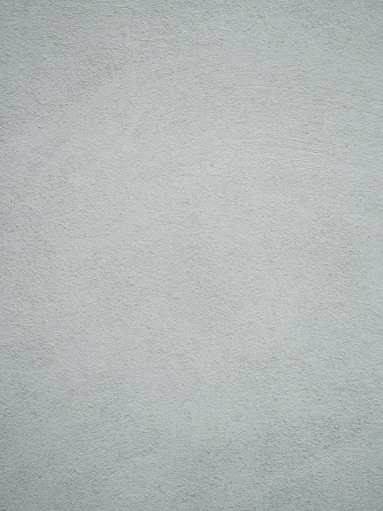

Nameštaj sa karakterom.
Predmeti oblikovani oko materijala, funkcije i bezvremenske forme.

(01) Izabrani radovi
Izabrani projekti
Četiri komada iz studija — svaki nastajao polako, kroz skice, prototipove i mnogo vremena provedenog u radionici.



(02) Filozofija
Manje, ali bolje.
Počinjemo od materijala i slušamo šta želi da postane.
Svaki komad počinje pitanjem upotrebe — kako se drži, kako se na njemu sedi, kako se otvara, kako se sa njim živi. Zatim uklanjamo sve što toj svrsi ne služi, a ono što ostane dorađujemo dok proporcije ne postanu same po sebi razumljive.
Rezultat je nameštaj koji ne traži mnogo pažnje, a ipak je nagrađuje. Iskreni spojevi, prirodne završne obrade koje lepo stare i forme dovoljno smirene da nadžive trendove — napravljene da se popravljaju, nasleđuju i koriste generacijama.
-
01
Materijal
Masivan, prirodan, iskreno obrađen.
-
02
Funkcija
Upotreba određuje formu, nikada obrnuto.
-
03
Proporcija
Ravnoteža pronađena rukom, u prirodnoj veličini.
-
04
Jednostavnost
Samo ono što je potrebno — ništa više.
-
05
Dugotrajnost
Napravljeno da se popravlja i nasleđuje.
(03) Materijali
Kratka lista iskrenih materijala
Namerno radimo sa malom paletom, birajući materijale po čvrstoći, teksturi i načinu na koji stare.
-

Hrast
Svetao, otvorenih pora i otporan. Vremenom poprima boju meda.
-

Orah
Duboki čokoladni tonovi i gusta šara koja se oseća pod prstima.
-

Kamen
Brušeni krečnjak i travertin — hladni, tihi, sa prirodnim varijacijama.
-
Čelik
Brušen i patiniran, korišćen štedljivo — za čvrstinu i precizne linije.

(04) O studiju
Dizajnirano polako, napravljeno da traje.
FORMA je mali, nezavisni studio u kome dizajn i izrada nastaju pod istim krovom.
Studio je osnovao dizajner Mladen Milošević, školovan i za arhitekturu i za stolarski zanat. Rad se odvija između table za crtanje i radnog stola: svaki dizajn se testira kao prototip u prirodnoj veličini pre nego što bude predstavljen, a zatim ga u malim serijama izrađuju provereni lokalni majstori.
Svake godine prihvatamo ograničen broj privatnih i poslovnih porudžbina — od jedne stolice do kompletnog opremanja doma.
- Godina iskustva
- 12
- Komada u kolekciji
- 40+
- Osnovna materijala
- 4
(05) Kontakt
Imate ideju za projekat?
Porudžbine, saradnje ili samo pitanje o nekom komadu — rado ćemo vas čuti.